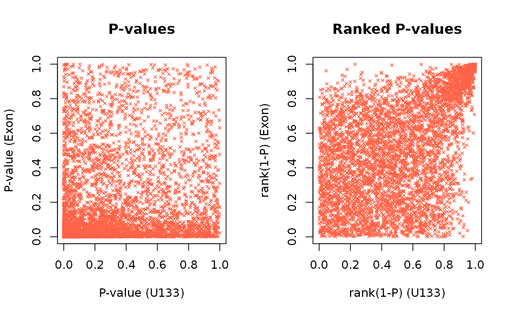
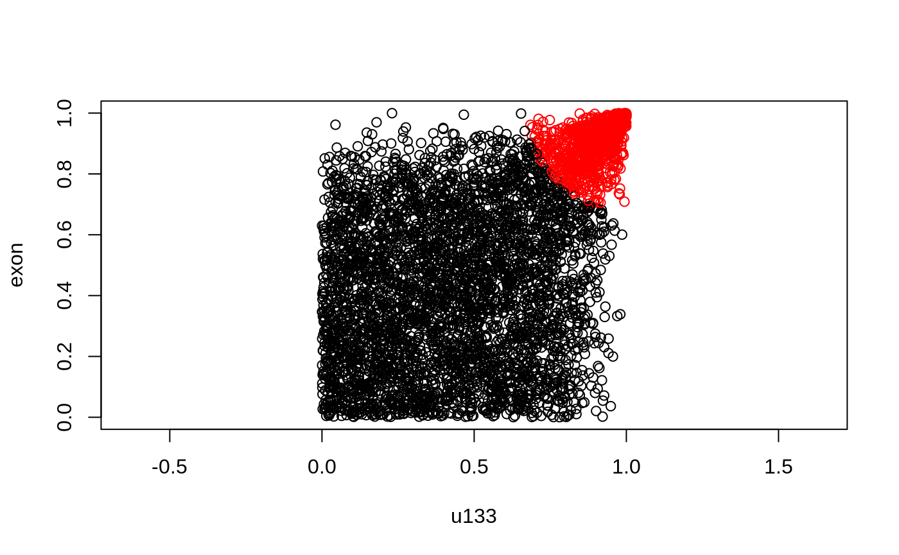
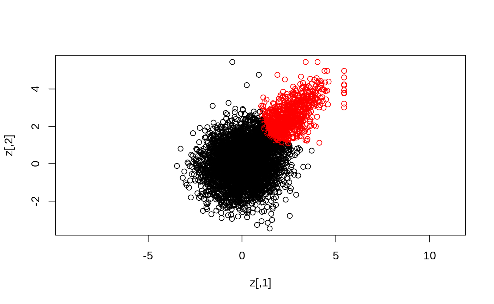
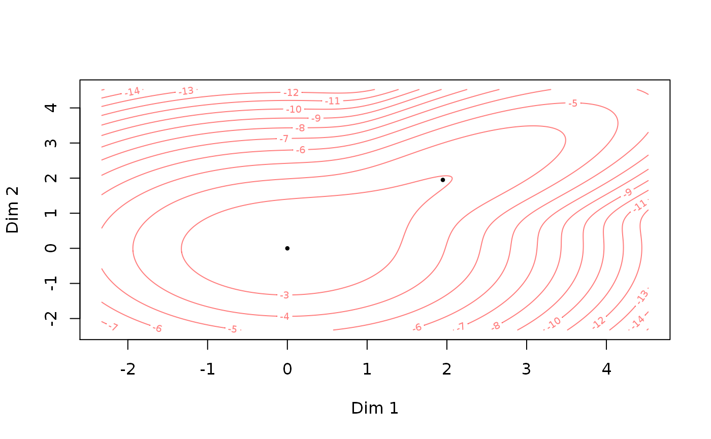

vignettes/usage-example-special-model.Rmd
usage-example-special-model.RmdThis is a quick tutorial for using the special GMCM for meta analysis.
The GMCM1 package is loaded.
If GMCM is not installed, please uncomment the above line and rerun the script.
The data is loaded and the first rows are printed. To illustrate we load the u133VsExon dataset within the package. The dataset contains 19,577 p-values for the null hypothesis of no differential gene expression between two cell types for each of two different experiments called u133 and exon.
## u133 exon
## ENSG00000265096 0.1756103672 1.072572e-01
## ENSG00000152495 0.0017797571 6.741108e-10
## ENSG00000198040 0.0053705738 1.505019e-03
## ENSG00000229092 0.0006693361 6.755118e-05See help("u133VsExon") for more information.
Next, we subset the data to simply reduce computation time. After that, we will rank it, and visualize it.
x <- x[1:5000, ]
The values above are p-values where small values indicate strong evidence—contrary to what is expected by the special model. In the special model, large values should be critical to the null hypothesis.
Therefore we ranks and scale 1 - p:
u <- Uhat(1 - x)
The original and ranked data is plotted:
par(mfrow = c(1,2)) # Visualizing P-values and the ranked P-values plot(x, cex = 0.5, pch = 4, col = "tomato", main = "P-values", xlab = "P-value (U133)", ylab = "P-value (Exon)") plot(u, cex = 0.5, pch = 4, col = "tomato", main = "Ranked P-values", xlab = "rank(1-P) (U133)", ylab = "rank(1-P) (Exon)")

Here each point represent a gene. The genes in the lower left of the first panel and correspondingly in the upper right of the second panel are the seemingly reproducible genes. They have a low p-value and thus a high rank in both experiments. The genes in the upper left and lower right are the ones that are apparently spurious results; they have a low p-value in only one experiment.
The initial parameters are set to
init_par <- c(pie1 = 0.6, mu = 1, sigma = 1, rho = 0.2)
With the data loaded and prepared, the model is can be fitted with the defined initial parameters.
par <- fit.meta.GMCM(u = u, init.par = init_par, method = "NM", max.ite = 1000, verbose = FALSE) print(par)
## pie1 mu sigma rho
## 0.7489036 1.9494403 1.1066673 0.7360319We here use the Nelder-Mead fitting method with with a maximum number of iterations of 1000.
The estimated parameters are used to calculate the local and adjusted irreproducibility discovery rates:
meta_IDR_thres <- 0.05 out <- get.IDR(x, par = par, threshold = meta_IDR_thres) # Compute IDR str(out)
## List of 5
## $ idr : num [1:5000] 0.872 0.99 0.976 0.981 0.203 ...
## $ IDR : num [1:5000] 0.4894 0.769 0.7032 0.7252 0.0645 ...
## $ l : int 431
## $ threshold: num 0.05
## $ Khat : num [1:5000] 1 1 1 1 1 1 1 1 1 1 ...out <- get.IDR(u, par = par, threshold = meta_IDR_thres) below <- out[["IDR"]] < meta_IDR_thres out$l <- sum(below) out$Khat <- ifelse(below, 2, 1)
By default, get.IDR computes thresholds on the adjusted IDR. The local irreproducibility discovery rate correspond to the posterior probability of the point originating from the irreproducible component.
The classes are counted by
table(out$Khat)
##
## 1 2
## 4136 864Where we see how many of the 5000 genes are deemed reproducible and irreproducible.
The results are also displayed by plotting
plot(x, col = out$Khat, asp = 1) # Plot of raw values
plot(u, col = out$Khat, asp = 1) # Plot of copula values

z <- GMCM:::qgmm.marginal(u, theta = meta2full(par, d = ncol(u))) # Estimate latent process plot(z, col = out$Khat, asp = 1) # Plot of estimated latent process

The model indeed capture genes in the upper right and classify them as reproducible.
The fitted par object can be converted to a theta object which can be plotted directly:

This report was generated using rmarkdown2 and knitr3 under the session given below. The report utilizes parameterized reports and knitr::spin.
## R version 4.0.2 (2020-06-22)
## Platform: x86_64-pc-linux-gnu (64-bit)
## Running under: Ubuntu 16.04.6 LTS
##
## Matrix products: default
## BLAS: /usr/lib/openblas-base/libblas.so.3
## LAPACK: /usr/lib/libopenblasp-r0.2.18.so
##
## locale:
## [1] LC_CTYPE=en_US.UTF-8 LC_NUMERIC=C
## [3] LC_TIME=en_US.UTF-8 LC_COLLATE=en_US.UTF-8
## [5] LC_MONETARY=en_US.UTF-8 LC_MESSAGES=en_US.UTF-8
## [7] LC_PAPER=en_US.UTF-8 LC_NAME=C
## [9] LC_ADDRESS=C LC_TELEPHONE=C
## [11] LC_MEASUREMENT=en_US.UTF-8 LC_IDENTIFICATION=C
##
## attached base packages:
## [1] stats graphics grDevices utils datasets methods base
##
## other attached packages:
## [1] GMCM_1.4.1 knitr_1.29
##
## loaded via a namespace (and not attached):
## [1] Rcpp_1.0.5 digest_0.6.25 crayon_1.3.4 rprojroot_1.3-2
## [5] assertthat_0.2.1 R6_2.4.1 backports_1.1.10 magrittr_1.5
## [9] ellipse_0.4.2 evaluate_0.14 stringi_1.5.3 rlang_0.4.7
## [13] fs_1.5.0 ragg_0.3.1 rmarkdown_2.3 pkgdown_1.6.1.9000
## [17] desc_1.2.0 tools_4.0.2 stringr_1.4.0 yaml_2.2.1
## [21] xfun_0.17 compiler_4.0.2 systemfonts_0.3.1 cpp11_0.2.1
## [25] memoise_1.1.0 htmltools_0.5.0Please cite the GMCM paper1 if you use the package or shiny app.